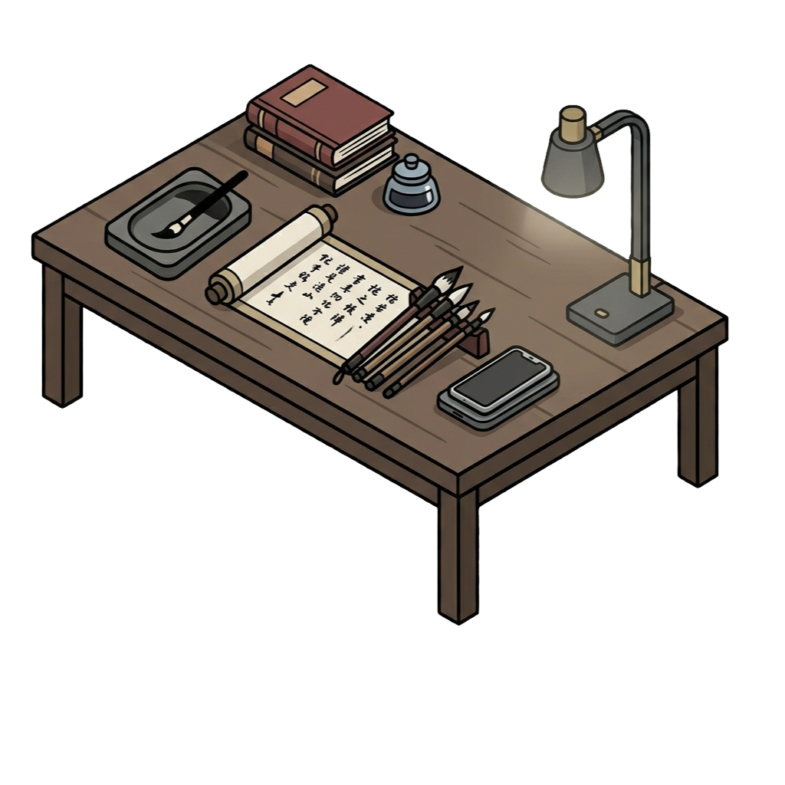
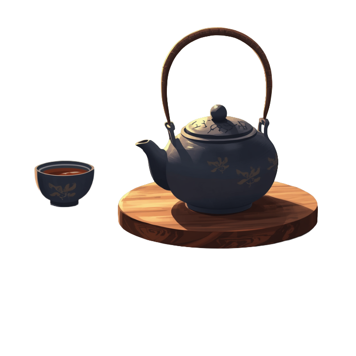
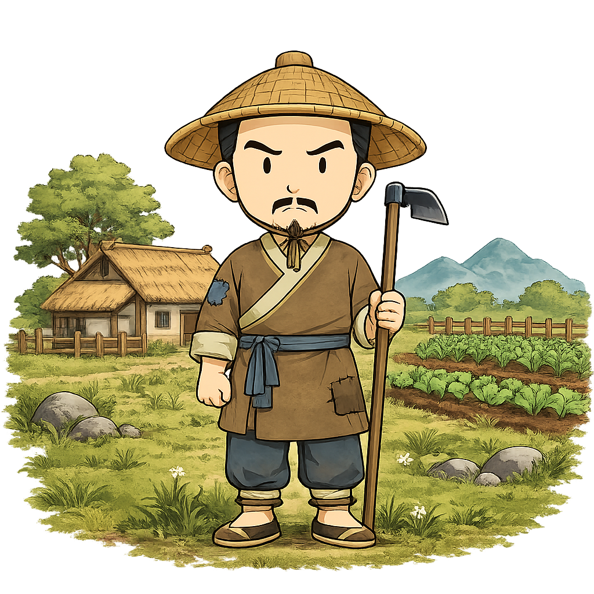

×

The Region of Gannan
Wang Yangming implemented the first Compact here in 1518 to restore order to the mountainous villages of southern Jiangxi.
📍
Southern Kiangsi Province
Would you like to listen to traditional melodies while you study the Community Compact?
A Lesson by Wang Yangming
Wang Yangming (1472-1529) was a general and a philosopher. He was sent to govern regions filled with crime and rebellion.
Instead of just using iron-fisted laws, he wanted to reach the heart. He believed every human has an "Innate Knowledge" of good.
Liangzhi (Innate Knowledge) is like a mirror. It is naturally bright and reflects what is right.
However, selfish desires and bad habits are like dust that covers the mirror. The Community Compact is a way for the village to "polish" their mirrors together.
Here is the "Meat" of the compact. It had 4 main goals:
Wang believed forced virtue was fake. To teach the compact, he used music and poetry to make the heart happy.
The final takeaway: Knowledge and Action are One. You don't "study" the compact; you live it.
Magistrate Wang’s Ruling:
"Zhang has confused Liangzhi with 'Hunger.' As punishment, Zhang will repair the village fence. Action and Knowledge are one—especially when chickens are involved."
By treating the village as "One Body," even a chicken thief can be brought back into harmony.
Master Yangming's Seal of Authenticity
"The mountains are high and the rivers long; may the peace of the Compact endure."



Wang Yangming implemented the first Compact here in 1518 to restore order to the mountainous villages of southern Jiangxi.
Southern Kiangsi Province